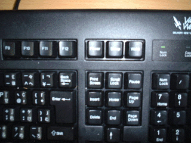
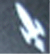
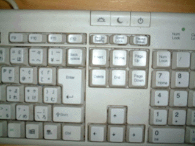
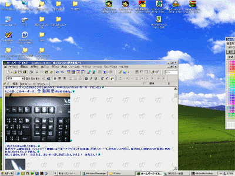
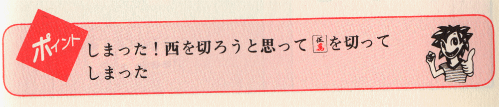
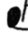

〜〜過去の雑記〜〜 （日記ペース無理なんで雑記に名称変更）
10）02/01/07〜02/07/08分
９）01/08/30〜01/10/30分
８）01/06/20〜01/08/25分
７）01/05/09〜01/06/12分
６）01/03/02〜01/05/03分
５）01/02/06〜01/03/01分
４）00/12/30〜01/02/05分
３）00/12/22〜00/12/29分
２）00/12/14〜00/12/21分
１）00/11/24〜00/12/13分
02/09/01
キーボード
新しいPCが手に入ったので、キーボードやらマウスを買ってきた。
基本的にデザインとかはどうでも良いので、980円くらいの安いキーボードだった。
ところが、このキーボード、全面黒塗りなのである。

このようなあんばいである。
私が少々心配なのは、「こいつ・・・無駄にキーボードデザインとか意識しやがって・・・しかもセンスわりぃ。恥ずかしい奴め」とか友達に思われないかということである。
断じて違うんです！ たまたま、安いやつがこれだったんですよ！ みなさん！

このロケットはいったい何なのか。
誰に対してこのデザインが良い印象を与え得るというのか、またどこに飛んで行こうとしているのか、全てが謎としかいいようがない。
こういう不始末のあるキーボードなのであるが、まぁ、全般的に使い心地はよかったのだ。
ちなみに以前使っていたキーボードは

こんな感じであった。
さて、しばらくは新しいキーボードを何の不自由もなく使っていたのだが、ある時、どうも一定のミスをしてしまう率が非常に高いことに気づいた。
「コピペしようとしてもなぜかできない」
「誤って入力の大部分を消してしまうことが増えた」
非常に嫌なタイプのミスである。
けっこう長時間かけて書いたプログラムが、一瞬で消えてしまったりするのである。
しばらく原因を探っていたが、ようやくわかった。
この黒いキーボード、昔のキーボードと、Delete、Insertの位置が微妙に違うのである（写真をよく見てもらうとわかるが）。
昔の感覚で、「Shift+Delete（カット）」して「Shift+Insert（ペースト）」しようとすると、「Shift+Insert（ぺースト）」して「Shift+PrintScreen（画面をクリップボードにコピー）」してしまうのだ。
恐ろしい差である。
プログラムを書きました。
コピーしておきたい範囲をカーソルで反転させました。
ここで昔なら ちゃんとその部分をカットし、ペーストする（これでクリップボードにその部分がコピーされ、さらに数回ShiftInsertを押せば、似たようなルーチンを複製できるわけだ）ことができた。
しかし新しいキーボードだと、カットするかわりにその部分に（過去にクリップボードにあった）何らかのものを強引に貼り付けて、今あったプログラムを消してしまうばかりか、その上「画面の画像」などいうわけのわからないものがクリップボードにコピーされてくる（つまり過去にクリップボードにあった、一部のプログラムまでもが消える）わけだ。
２重のダメージである。
一連の作業はいちいち確認されず、ブラインドタッチかつ最高速で
「Shiftを押しながらDelete→Insert Altを押しながら F→V→R→E→R→R」
などとなされるため、知らない間にプログラムが消えた上、それがもう保存されてしまい「やり直し」が効かない状態に追いやられてしまっているのだ。
さらに、「キーボードデザインのかっこよさを求めて悪趣味なやつを買い、しかも失敗して・・・ﾌﾟｯ」などと友達に思われることを考えると（←自意識過剰）、３重のダメージである。泣き面を蜂に刺された上、別に虎児などいらんのに、みすみす虎穴に入っていくようなものだ（よくわからんが）。
クリップボードに残るのは、長時間かけて書いたプログラムではない。
その前にコピーしておいた、せめてものプログラムの一部でさえない。
正体不明のオモシロ画像だけなのである。

こうなったら全てが後の祭り、「誰か、誰かおらぬのか！！」状態である。
もう笑いながら寝るしかないのだ。いやぁ、愉快、愉快ヽ(´▽`#)/
02/08/30
学食
大学生協の学食には、「ひとことカード」なるものがある。
質問や要望などを書くと、それに対する生協側からの真摯な回答がもらえる。
いくつか、要望と回答例を見てみよう。
「中華丼をメニューに入れてください」
回答：さっそく提案してみます。
（要望が多ければ、1〜2週間で実際に入ったりすることもある）
「彼女がほしい」
回答：学生食堂を出会いの場にして、がんばってくださいね
（こちらはおそらく、実際には1〜2週間で彼女はできまい）
「ハナモゲラ」
回答：ハナモゲラですか？ それはいったいなんでしょう？ 今度ぜひ、教えてくださいね。
（涙ぐましいほどの真摯さである）
けっこう笑えるものもある。
「体のこぶを取ってほしい」 ←こぶてなんやねん！ 怖いわ！
回答：どこのでしょうか？
（おまえ、どこかわかっても、取る気ないやろ？ 真摯な態度と裏腹の、偽善的な香りが漂っている）
「人には言えない秘密がある」
回答：私にもありますよ、がんばってください。
（君、すべて「がんばってください」で適当になってきてないか！？）
「カルビのことをカルービーと書くのはやめてください」 ←ごもっとも！
ちなみに、東北大学（川内北キャンパス）の麺コーナーに「トッピング」のシステムを構築したのは、何を隠そうこの私だ（笑）。
それまでは毎回、個別対応でトッピングしてもらってたのだが、ちょっと面倒だし混んでると時間がかかるので、「トッピングできるようにしてほしい」という要望を一人で50枚くらい書き、自作自演を交えつつ投稿し続けたところ、わずか３日で導入されシステム化された( ≧∇≦)ﾌﾞﾊﾊﾊ!
ラーメン（塩、または味噌）にメンマ・ほうれんそう・ネギトッピングが一番おいしく、かつ安い。
例えばメンマラーメンを頼むと、それだけで値段がこれより高い上、メンマも少なく、味の選択もできない（まずいしょうゆ味になる）。
愚昧な学生どもがメンマラーメンを頼んでいる中、優越感を持ってラーメンを食べれる←
なお、ネギのトッピングはほとんど「裏技」であり、直接調理のオバチャンに20円手渡しするシステムなので注意すること（笑）。
ちょっと懐かしくなったのでもう少しローカル雑談を。
生協の発行している冊子（だったよな？ T-CCだとかいうやつ）の、クイズコーナーはお得である。
正解者の中から抽選で毎月10名に1000円分の食堂利用券または図書券が当たるのだが、意外なほど参加者が少ない。
普通にやってもだいたい、２〜３ヶ月に１回ペースで当選するのだ。
友達の名前・住所などを借りて（もちろん事情を話して協力してもらう）投稿すると、１月で7000円儲かったりする←
02/08/25
麻雀上達の奥義
おれはけっこう、麻雀の戦術書を持っている。
まあ、戦術書のほとんどには汎用的な技術が書かれていないもので、それはしかたない。
しかし、シロウトがいざ麻雀を覚えようと思ったなら、充分に勉強になるような内容ではある。
彼女が麻雀を覚えたてなので、トイレに麻雀の本が置いてあって、おれもうんこ中にヒマツブシに読んだりしている。
各ページの右下に「ポイント」という項目があり、そのページのおさらい的な内容が書いてある。
例えば
「ドラの使い方を考えて、そばの牌を早く処理しよう」
なるほど。
「チートイツを狙う場合はション牌を大事にすることだ」
ふむ。まぁそうですな。
「ダブリーは２役になるんだぜ」
いや、しっとるわ！
などとつっこみながら、うんこしているわけである。
ところが、読み進めるうちに、とんでもないページに出くわした。

何のポイントやねんそれ！！！！
なんでお前の個人的なミスを暴露しとんねん！ しかも右の男、ニヤついてる上得意げやで！！
うんこ止まるわ！！！
またどないして西と５マンを間違えてん君・・・
もちろん、「牌の切り方」などのページではない。
「牌の切り方」を間違えて、こうなるので注意、などでなく、ただ麻雀の基本を解説しているページなのである。
この戦術書は、この「ポイント」の存在のみによって、おれから絶賛されている本なのである・・・
02/08/20
圧力
電車に乗って、座席に座っているとき、隣にデブが座ってしまうと、非常に圧迫感があって嫌だ。
デブは血圧が高いのが多いが、一般に、けつ圧も充分高いと言えそうだ。
02/08/19
世界
私は基本的に、犯罪とかをしないタイプである。
日本の警察は優秀だから、短絡的な欲望から犯罪すると、すぐにつかまりリスクがでかい。
親リーに役牌のみ４シャンテンから攻めるようなもんだ。
私は性善説など信じないので、もし、警察がおらず、かつ自分に実力があれば「犯罪的行為」を繰り返していたかもしれないが。
とはいえ、それは「思想的な」問題であり、実際私は慎重なタイプなので、いくらばれないと言っても、そうそうそういったことはしないっぽい。
他人の犯罪行為についても基本的に無関心である。
別に小学校乱入事件が起きようが、犯人が反省してなかろうが、残念ながらどうでもいい。
第三者がそれについて怒ったり、何事か口を出したりすること自体が、全くの自己満足でしかなく、その人の「人間性」は犯人のそれと同じ価値しかないことを知っているからだ。
ただ、当該の行為が犯罪であろうとなかろうと、私自身が被害を受ける場合は違う。
全力で対処するし、あるいは「報復」をする。
大切な人が他人に故意に殺害されたとしよう。
「大切な人が冷酷な犯罪の犠牲になってしまいました」とＨＰで仰々しくしたりはしない（笑）。
そのような絶望的な状況を他人に消費させてたまるか。大切な人の死を、大学生の飲み会のツマミにされてなるものか。
ただ私は、確実に犯人を殺す。
そのための綿密な計画をたてる。
犯人が長期間刑務所に入り、心を入れ替えたりとか後悔したとか毎日黙祷したとか、一切関係ない。
必ず、犯人の所在地を探り、行動記録を取り、スキをみつけて捕まえて監禁し、途中で死なせないように注意しつつ（失血死だけは避けねば）、長期間拷問して死なす（もちろん、最も多くの苦痛を与える方法のために、医学書や拷問の歴史書を調べたり、道具を購入する努力は惜しまない）。
その後はやることもなくなり死ぬだろう。
私は冷静だから、キレて相手を一瞬で刺し殺したりしない。
しかしまた、冷静に考えて世界や法律や憐憫や同情や論理に意味がなくなった時、それらを完全に破棄して綿密な「報復」を遂行する自信がある。
02/08/16
ラベル
カセットとかビデオなどの、「ラベル」に何かを記入するというのはどうしてあんなに怖い作業なのだろうか？
ボールペンだし、ラベルは１つのカセットに１枚しか入っていないから、絶対に失敗できない。
絶対に失敗できないとわかると、どうも緊張して字が震えたりしてしまう。
今はCDどころか、MP3だの色々あるから「カセット」に頼ることはなくなったが、昔は「ラベル書き失敗」すると失望したものだった。
せっかくのお気に入りカセットを作ったのに、ラベルがヘナチョコ文字になったりするともう、何もかもが終わりだったのだ。
しかしある時私は、ラベルがヘナチョコ文字になっている程度、何ら大したことでないことを思い知った。
当時、Mr.Childrenの「Kind of love」というアルバムが売れていたときだったが、姉がそのテープを作ってきた。
表には堂々と「King of love」などと表記されていた。いや誰やねんその王は。
しかも姉は、私がそれに突っ込む前に
「とつ、ほら、キングオブラブやで」
などとはしゃぎまわっているのである。
だからどこにおんねんその意味不明の王様は。
姉は一人、もはや帰ってこられない場所まで旅立ってしまっているわけだ。
当然、私は姉の誤解を指摘するなどとてもできず、気付かなかったフリをしてそのテープを受け取ったものだ。
世界にたった一つしかない、King of loveのテープなのだから。
残念なのは、数日後に姉の部屋にあったもう一つのテープのタイトル部分が
こうではなく、
こんな感じになっていたことである。
全然ダメである。
むしろ、ばれ率97％である（シスマ調べ）。

この部分を黒く塗っている瞬間の姉の心境を察すると心が痛む。
全体を塗り終わった後で見直して、このデザインの悪さに改めて落胆する姉の顔も、想像に余りあるものだ。
楽しいはずの音楽が、一生のトラウマになるほどの事故に発展する・・・「二度書きできないラベル」とは、そういうものなのである。
ただ、姉に一言だけ言っておきたい。
ドヘタ！！
02/08/14
小ネタ「嫌な竹原」
５期生をにらみつける竹原「わかったわい。お前らがそこまで言うんやったら、もうワシぁ知らんけぇのう。ワシぁあっちでパックンチョたべとるけぇ好きにせいや」
02/08/04
某ページのおかん電話ネタに触発されたわけじゃないが（笑）
おかんはとにかく、おれに電話をかけたがる。
昔からそうなのだが、実にどうでもよい理由をつけてはおれに電話し、ちょっとでも電話に出なかったりすると気が狂ったように電話をかけまくってくるのだ。
あまりにうざく何度も何度も電話してき、しかも毎回同じ話をし（いかに健康が大事か）、かつ、宗教臭い（４次元の霊のパワーで健康に）ので、さすがにおかんに対して嫌気がさす（笑）。
「なんでやねん」を読むとおれとおかんは仲が良さそうに見えるだろうが、実際は、けっこう険悪な関係にある（笑）。
大学院に入りたての頃の話である。
慣れない学校から帰って疲れているのに、留守番電話などに、大量のおかん声が録音されているのを見ると、電話機という文明の利器にさえ苛立ちがつのってしまう。
「・・・もしもし？ あら、とついないの？ あとでかけるわ」
「もしも〜〜〜し？ とつ？ いないの〜？ またあとでかけるわ」
「もしもし？ あらぁ」
「もしもし・・・（ｶﾞﾁｬｯ）」
なんでお前の「あとで」は最長で30分とかそういうスパンやねん！
どっかにスイッチとかついてて、規定より短めにセットされとるんちゃうか？
「とつ〜〜お〜〜〜〜い。寝てるの？ ちょっと電話くださ〜〜い」
「もしもし〜電話ください」
「（ｶﾞﾁｬｯ）」
「（ｶﾞﾁｬｯ）」
「（ｶﾞﾁｬｯ）」
無言のアピールやめいお前（笑）。最後の方わざとやっとるやろ（笑）。
しかたなく、こちらから電話をする。
おかん「もしもしとつ？ ああよかった、あんたが死んだんかと思ったわ」
死なぬ！ 断じて死なぬ！ またはあんたが死ね。
とつ「・・・用件はなに？」
おかん「ああほら、ええと・・・あれ。なんやったっけ。ああ、忘れた」
やめて！ やめてよおかあさん！ 僕今ちょっと切れそうになっちゃった！
おかん「ナッハッハ。また思い出したら電話するわ」
そして、電話を切って５分後くらいで、またかかってくる。
おかん「もしもし」
とつ「・・・はい？」
おかん「あんた、あれあるって言ってたな、あの〜〜オリエンテーション。あるやろ？ 学校の。どうすんの」
どうするもクソもない、ただの新入生向けの説明会的なイベントやろが。
とつ「別に、普通」
おかん「リュックとか靴とかいるんちゃうの」
いりません。この世には確かにオリエンテーリングと呼ばれる、しばしばリュックサックや山歩き用の靴を必要とするスポーツが存在することは認めます。しかしながら、今議題に上がっているのはオリエンテーリングではありません。強いて言えば、オリエンテーションです。したがいまして、あなたの心配は残念ながら的外れです。というか、なんでそんなにバカなんすか？( ノД`)
02/08/01
麻雀好きですか？
告白すると、おれは、実はそれほど麻雀が好きではない。
「嘘つけ！！」
と思われるかも知れないが、ほんとに、ゲームとしての麻雀への「好き度」は、トランプの大富豪と大差なく、ファミコンのＲＰＧ以下である。
では、どうしてファミコンのＲＰＧではなく、こんなに東風荘にはまっているかと言うと、「データが取れて研究できるから」に尽きる。
細かいデータや数字の羅列を見たり、研究したり、それを高めていくという作業自体に萌えるらしい（笑）。
ファミコンでは攻略したら終わりだが、麻雀ならまだまだ打ち方改善・研究の余地がある。
バイマンキンもそういう感覚の持ち主で、ＨＰ上で「麻雀はやはり何百試合と打ち、データを出して初めて楽しいゲーム」ということを明言している。
もしも東風荘に「mjscore」がなかったら、おれもバイマンキンも「不調」を迎えてみかけＲが下がった段階で、即飽きてただろう（笑）。
データも取れず、運のみで長期の不調が来てしまうようなゲームを、おれらはたぶん楽しめない（笑）。
この感覚がない人は、どっちかと言うと分析型（というより分裂型か 笑）ではない。
はした金のために、肩を凝らせて、毎回同じような局面でピンフを作ったりベタオリしたりする長い長い作業に飽きないのは、おれやバイマンキンから見ると信じがたい行為である。
その人らはなんと、麻雀の「ゲーム自体」を楽しんでいるのだ。
もちろん、彼らから見ると、我々の存在は信じがたいものだろう。
なにせ、「大して好きでもない」と本人が言っているゲームを、えんえんとやりつづけているわけだから（笑）。
「麻雀」への愛という点では、おれよりも「普通の雀士」の方が遥かに凄いのかもしれない。
残念なのは、「分析ではなくそのものを楽しむ」ことは、頭脳ゲームにおいては、必ずしも実力の向上につながらないことだ。
どちらが幸せなのかは本人の好みによるからわからないけども、知り合いの中でも、分析型だなぁと思う人の方が、おしなべて実力の向上が目覚ましい。
あまり指摘されない、東風荘の麻雀界への決定的な貢献の一つは、それまで構造的に「分析型」の人が楽しめなかった「麻雀」というゲームを、根底から大転換してしまったことにあるのかもしれない。
02/07/24
あだ名
おれの一生のうちで、最もかわいそうなあだ名をつけられた人は、たぶん中学時代同じクラスにいた女（Ｍさんとしよう）だろう。
ヒドイあだ名と言えば「オタク」「虫」など色々あろう。
確かにそれらもひどい。
だが、Ｍさんの場合、その比ではない。
ああ、確かにＭさんは、デブだったよ。
当たり判定がでかい故に、球技大会のドッヂボールで一瞬で当たってたよ。
君らがいじめたくなる気持ちもわかる。
しかしだな、そのあだ名はさすがにかわいそうだろ。
彼女のあだ名は・・・・・・
「ごっつビッグ」（実話。１年間クラスのみんなからこう呼ばれていた）
02/07/21
さあ問題です。

東風ではご存知の通り、ある捨て牌が、ポンやチーなどをされて河からなくなるとき、その牌に網がかかる。
この画面では例えば、北家（手前）の東は西家にミンカンされているわけだ。
実際の麻雀だと、北家の３順目の東は、この位置から「なくなっている」。
問題：
では、西家が６順目に切った６ピンはどこにいったのだろうか？
確かに網がかかっていて、なくなっている。しかし卓上には、６ピンをポンやチーした形跡はない。
みんなも考えてみよう。
ヒント：北家はカンチャン６ピンが欲しくて欲しくてたまらず、一発ツモで上がればトップになる ←
というのは冗談で、これは東風の不具合のようだ（北家の方は無実です、ごめんなさい）。
捨て牌の順序を計算するプログラムを作っていて今日発見した。
ある条件下で、ポンやチーされていない（もちろん河から拾ったりしていない 笑）はずの牌に網がかかる。
再現性もあり、このような「誤斜線」が入る（誰でも、比較的簡単にこのような画面を見れます）。
真面目に詳しく知りたい方は、ここの「東風荘の不具合による問題」をごらんください。